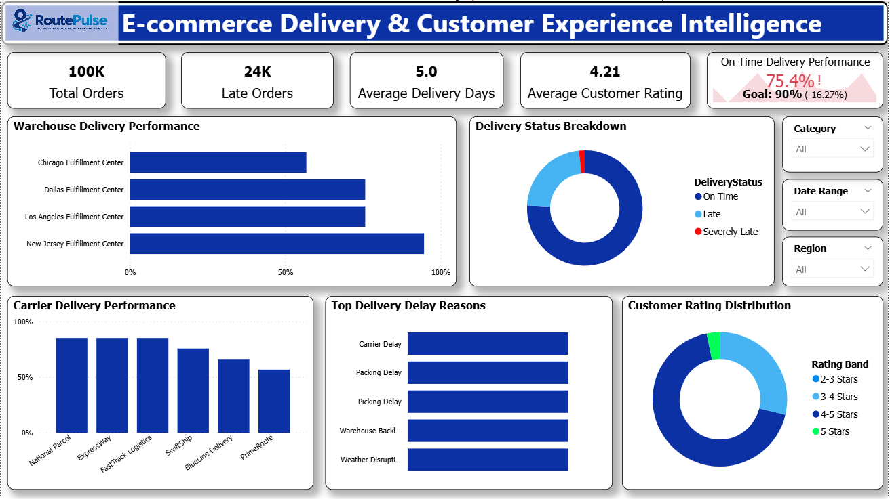

FULFILLMENT & DELIVERY
E-commerce Delivery Performance Dashboard
Project: RoutePulse
Business problem: Limited visibility into delivery performance and fulfillment SLA compliance.
Data analyzed: 100,000 transaction and fulfillment records.
Approach: SQL aggregation of transit lead times and interactive Power BI reporting.
Findings: 74.4% on-time delivery against a 90% target, with 24,000 late orders and an average delivery time of 5.0 days.
Recommendation: Review regional carrier SLAs and introduce dispatch alerts for high-risk postal codes.
SQL / MySQL
Power BI
View Case Study Documentation
